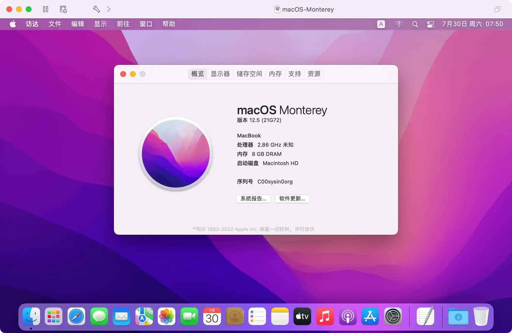
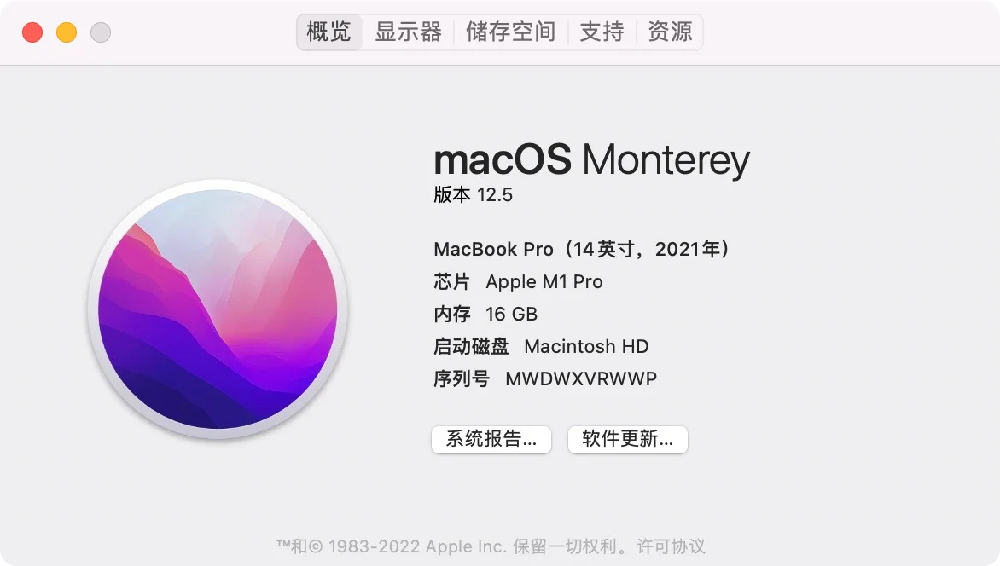
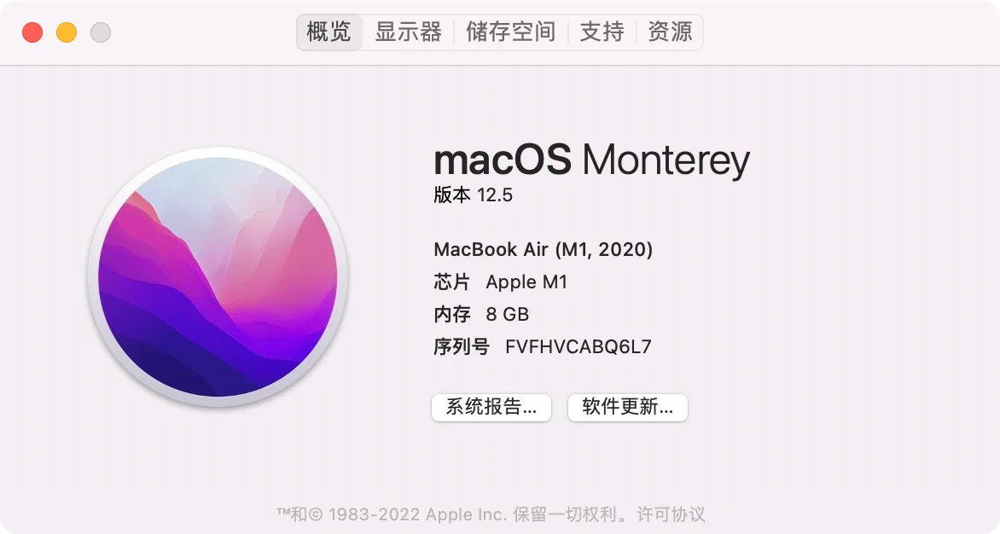

请访问原文链接：macOS Monterey 12.7.6 (21H1320) Boot ISO 原版可引导镜像下载 查看最新版。原创作品，转载请保留出处。
作者主页：sysin.org
macOS Monterey

各种超赞表现，
向大家问好。
从联络、分享到创造，感觉全然一新。FaceTime 通话的新功能，个个招人喜欢。Safari 浏览器改头换面，待你探索。通用控制和快捷指令，开创新颖强大的工作方式。专注模式，做起事来无打扰。
更多点赞之处，留给你补充。
2021 年 10 月 26 日推出。
macOS Monterey 带来多项开创性功能，助力用户以全新方式沟通交流、完成更多任务、使用多台 Apple 设备顺畅开展工作。FaceTime 通话包括全新音频与视频功能，让通话更自然生动；隔空播放到 Mac 等全新连续互通工具让 Apple 设备间的协作比以往更加顺畅；实况文本带来新的智能功能，呈现实用信息；Safari 浏览器通过标签页组带来强大的标签页管理功能；快捷指令首次来到 Mac，带来轻松的自动化操作体验 (sysin)。今年晚些时候，同播共享功能将让 Mac 用户通过 FaceTime 通话共享精彩内容；通用控制将让用户更轻松地搭配利用 Mac 和 iPad 展开工作。macOS Monterey 今日起作为免费软件更新发布，供搭载 Apple 芯片和基于 Intel 处理器的 Mac 下载。
下载地址更新
这里列出 ISO 启动镜像下载链接，更多格式请访问以下地址：
应用场景
macOS Monterey 12 可启动 ISO 镜像，基于 Apple 原版 App 制作，可以用于虚机安装，可以拖拽到 Applications（应用程序）下直接双击安装，也可以制作启动 U 盘安装。

图：macOS Monterey 运行在 Fusion 12 中，并开启了 Metal GPU 加速。
硬件兼容性列表
看看你的 Mac 是否能用 macOS Monterey
-
MacBook 2016 年初及后续机型 进一步了解>
-
MacBook Air 2015 年初及后续机型 进一步了解>
-
MacBook Pro 2015 年初及后续机型 进一步了解>
-
Mac mini 2014 年末及后续机型 进一步了解>
-
Mac Pro 2013 年末及后续机型 进一步了解>
-
iMac 2015 年末及后续机型 进一步了解>
-
iMac Pro 2017 年及后续机型 进一步了解>
如果你的 Mac 不在兼容性列表，参看：在不受支持的 Mac 上安装 macOS (索引页面)
适用的 VMware 软件下载链接
建议在以下版本的 VMware 软件中运行（Linux OVF 无需本站定制版可以正常运行，macOS 虚拟化如果不是 Mac 必须使用定制版才能运行，Windows OVF 需要定制版才能启用完整功能）：
- Server：VMware ESXi 8.0 or with driver & vCenter Server 8.0，ESXi 7.0 or with driver & vCenter Server 7.0
- macOS：VMware Fusion 13
- Linux：VMware Workstation 17 for Linux
- Windows：VMware Workstation 17 for Windows
ISO 镜像的优势
相对于官方发布 pkg 镜像（另有 ipsw 镜像，但仅适用于 Apple 芯片），以及第三方制作的 dmg 镜像，ISO 格式具有以下优势：
- 可以直接拖拽到 Applications（应用程序）目录下（无需管理员权限），进行升级安装
- 可以直接双击挂载，执行命令写入 USB 存储设备或者其他卷，然后启动全新安装（无需拖拽到“应用程序”目录下）
- 可以直接启动虚拟机安装，介质本身为可引导镜像
- 可以在 Windows 和 Linux 下写入 USB 存储设备，创建 USB 引导安装介质
- 跨平台支持，可以在任意操作系统中使用，其他格式仅限 macOS 专用
下载地址
如何校验本站下载的文件的完整性部分小版本已清理。
可引导镜像，可以在当前系统中安装或者升级，可以通过 USB 存储引导安装，也可以用于虚拟机安装。
-
macOS Monterey 12.7.6 (21H1320) ISO
百度网盘链接：https://pan.baidu.com/s/19_2f-XdnurCa1GXcEpK8bw?pwd=1rs6
SHA256SUM：33313b85f36a5f87c5475292e7daa4e8aea2700a02cd5fc3304dc3605eb434d2 -
macOS Monterey 12.7.5 (21H1222) ISO
百度网盘链接：https://pan.baidu.com/s/1ol5gzxN2xdFHAWctUT5uNQ?pwd=8nqt
SHA256SUM：209de4ffd372f32e2ed920369950dab80b111130da04c96d854add53e3a56582 -
macOS Monterey 12.7.4 (21H1123) ISO
百度网盘链接：https://pan.baidu.com/s/1LpMEdz5exWGJpnu-VJKrZA?pwd=zj7s
SHA256SUM：2ad2b1ca835f870406a65a0bd663279147b300c61903b7869da748191afdd2b7 -
macOS Monterey 12.7.3 (21H1015) ISO
百度网盘链接：https://pan.baidu.com/s/1ftqsChUUWE7bmoiSkOdohQ?pwd=favj
SHA256SUM：1cbfc988460c2a5c44ce6f6c3408c50c67ca14dba9d15c17737f44d0e440ba9e -
macOS Monterey 12.7.2 (21G1974) ISO
百度网盘链接：https://pan.baidu.com/s/1_52pnN8Hn_pErZ1raztUQQ?pwd=hv4r
SHA256SUM：5a4664efbf9bcbb2646a237cfa8eb3397b559a7bfbfbc27c6b8f8bb8b2318247 -
macOS Monterey 12.7 (21G816) ISO
百度网盘链接：https://pan.baidu.com/s/10rs6PbY8-oR-k3NgKXogtA?pwd=2d2c
SHA256SUM：bff52d26874cdf16f08b9f49173b075c3acd0cae7b681b2cac64b17c85d1f434 -
macOS Monterey 12.6.9 (21G726) ISO
百度网盘链接：https://pan.baidu.com/s/1DUXoiel-sQ09Aaw80IR-iA?pwd=zer5
SHA256SUM：c714fcb35a99b7ed8cd8375dc79596399590e0fb095fb0fea910e6a9a00cae8c -
macOS Monterey 12.6.8 (21G725) ISO
百度网盘链接：https://pan.baidu.com/s/1Yid0qhh1yzIBt76kFBCwZw?pwd=jmgj
SHA256SUM：80083856b22a76eea8f50ae6e2530de0c7c529d8f8a03a229877d8f09b141c91 -
macOS Monterey 12.6.7 (21G651) ISO
百度网盘链接：https://pan.baidu.com/s/1vaRO3swOvQHgUud7tCRGRg?pwd=jp8l
SHA256SUM：12505702bb66331b86e05dbcef728fbe94e30882547a5f22e0f4277d1d43c8e8 -
macOS Monterey 12.6.5 (21G531) ISO
百度网盘链接：https://pan.baidu.com/s/10V5ycLkhYM2BS-3JsB7osg?pwd=5yyd
SHA256SUM：1b0efa5d3384701e4s9y9s7i5n97914c4e1eedfa5544c5db774227d9fe8b6148 -
macOS Monterey 12.6.3 (21G419) ISO
百度网盘链接：https://pan.baidu.com/s/1MYT7LX_cuB-DAYj7RGs2ww?pwd=lbsr
SHA256SUM：e49c45dd6000b56bbea996a405b22853d850cdf5226b244f04466089d339c944 -
macOS Monterey 12.6.2 (21G320) ISO
百度网盘链接：https://pan.baidu.com/s/1mUkreaB-Na8wC4-V-GVNsg?pwd=mo5d
SHA256SUM：c597c5504db4ad4ec569eceea97c962c42fbadf76072f4ebd720d4920cca3ebd -
macOS Monterey 12.6.1 (21G217) ISO
百度网盘链接：https://pan.baidu.com/s/1S0hezpmiI-8Q2udVanKQmQ?pwd=mgbf
SHA256SUM：bae91ecc855a1fdf7b9ef46c92a2e68f3e6fbcb2b7c799c283750f0ce67e8aa2 -
macOS Monterey 12.6 (21G115) ISO
百度网盘链接：https://pan.baidu.com/s/1rij5EqMrZo3zTfRlx-EsKw?pwd=p7nn
SHA256SUM：b2d968f9938c9362f1aab423ff9f748d57c14c27fa6444114c621334ac4c6c1b -
macOS Monterey 12.5.1 (21G83) ISO
百度网盘链接：https://pan.baidu.com/s/1SbU-e-m-QgiuTjWwCcxx8w?pwd=hwl5
SHA256SUM：0a926b40fad2a11274206800eed67d32c8c121628f3f54d1bcf6135fc987fc90 -
macOS Monterey 12.5 (21G72) ISO - 推荐版本
百度网盘链接：https://pan.baidu.com/s/1vTym_g4gYdM3vbCE3SFGhw?pwd=2w1t
SHA256SUM：1d71add20daea6319d61a5d2ae5a024d2248b34d97d1639c960d25734b4d3703 -
macOS Monterey 12.4 (21F79) ISO
百度网盘链接：https://pan.baidu.com/s/1aK7XQ7ZSEM6UKCZB3QC6bg?pwd=b6bw
SHA256SUM：6ec4dcf8173b3e415ebcf9bbd1d20c9ded6ed3ee71025c070c366ca6dbb4d54b -
macOS Monterey 12.3.1 (21E258) ISO
百度网盘链接：https://pan.baidu.com/s/1hMmjCyl9EqBwkE5RpGQgOA?pwd=usmm
SHA256SUM：7b3e8a0415eb9d07f18fd1ac5b49f2cf26f16310c28a00e09f6c6b111ced568d -
macOS Monterey 12.3 (21E230) ISO
百度网盘链接：https://pan.baidu.com/s/18jE1RRGu3AgWWgRCrO7eUw?pwd=rvt5
SHA256SUM：00a772d01f95f8e986788676fc02b6af9ccc4787167053c73b8d9b56271b6c73 -
macOS Monterey 12.2.1 (21D62) ISO
百度网盘链接：https://pan.baidu.com/s/1XzYoizzwEmxb0uVqR5Uy8A?pwd=t1rd
SHA256SUM：c7cfb2b5fb83ecbce9e3f91f5a79d057fc9f5426a9406078aeaad688a0bb67d2 -
macOS Monterey 12.2 (21D49) ISO
百度网盘链接：https://pan.baidu.com/s/1deLg5mo0hvqY-pobGoeU_g?pwd=cvsh
SHA256SUM：04bb8a2eeb01d0f36f0c19076ccfca455fb1bd55a7f1870852d0bec524e7092b -
macOS Monterey 12.1 (21C52) ISO
百度网盘链接：https://pan.baidu.com/s/1Bw391WE7Ikkxf-aBgfA4YQ?pwd=vf3s
SHA256SUM：0329ebc7e7b8abd7c174fd08dc567febec598ea96a779a28046b7780397c1de5 -
macOS Monterey 12.0.1 (21A559) ISO
百度网盘链接：https://pan.baidu.com/s/14PAl3lP84TWUygcZ-oxQJw?pwd=ma38
SHA256SUM：09fade1233b7d25f8991ebc4ebe75bbadbe929def3bf5cab1da4ebf7de7bcbeb
如何创建可引导的 macOS 安装器
参看：如何在 Mac 和虚拟机上安装 macOS Sequoia、macOS Sonoma 和 macOS Ventura
搭载 Apple 芯片的 Mac 电脑
从 2020 年末推出的某些机型开始，Apple 开启了 Mac 电脑从 Intel 处理器到 Apple 芯片的过渡。
在搭载 Apple 芯片的 Mac 电脑上，“关于本机” 会显示一个标有 “芯片” 的项目并跟有相应芯片的名称：
要打开 “关于本机”，请选取苹果菜单 > “关于本机”。
- MacBook Air（M2，2022 年）
- MacBook Pro（13 英寸，M2，2022 年）
- Mac Studio（2022 年）
- MacBook Pro（14 英寸，2021 年）
 - MacBook Pro（16 英寸，2021 年）

- iMac（24 英寸，M1，2021 年）
- Mac mini（M1，2020 年）

- MacBook Air（M1，2020 年）
 - MacBook Pro（13 英寸，M1，2020 年）

文章用于推荐和分享优秀的软件产品及其相关技术，所有软件默认提供官方原版（免费版或试用版），免费分享。对于部分产品笔者加入了自己的理解和分析，方便学习和研究使用。任何内容若侵犯了您的版权，请联系作者删除。如果您喜欢这篇文章或者觉得它对您有所帮助，或者发现有不当之处，欢迎您发表评论，也欢迎您分享这个网站，或者赞赏一下作者，谢谢！
 支付宝赞赏
支付宝赞赏
 微信赞赏
微信赞赏
赞赏一下